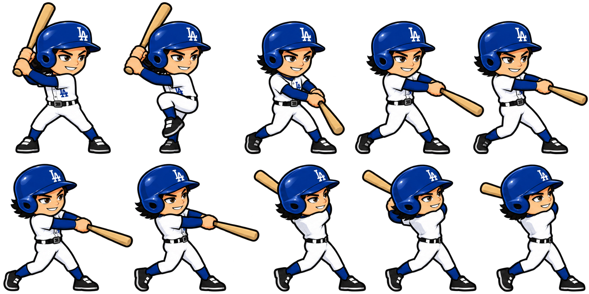

BASEBALL HEROES · WEB 1.0.43
Tus poses dentro del juego
Nuevo cuerpo ilustrado, casco con volumen y recorrido completo del bat, usando las láminas que enviaste y la cara elegida en el creador.
JUGAR ACTUALIZACIÓNLa referencia que elegiste
Las dos imágenes originales se conservaron byte por byte. Para batear se usa la versión con casco; la lámina con gorra queda guardada como referencia. Las diez figuras se leen como poses independientes, con sus puntos de cuello, pie de apoyo y extremo del bat.

Tu lámina con casco, conservada sin modificar el archivo PNG.Las diez poses con tu propio héroe
Se incorporan la postura inicial, la pierna levantada, el inicio del giro, la aproximación al contacto, la extensión y la terminación. La cara permanece visible durante el giro, como en tu ejemplo. El cuerpo, los brazos, la ropa y el casco conservan el sombreado de la ilustración.
 Las diez poses originales montadas con la cara guardada del héroe y colores de ejemplo.
Las diez poses originales montadas con la cara guardada del héroe y colores de ejemplo.La cara elegida sigue siendo la misma
El montaje usa el rostro guardado, su variante, género y colores. El casco ilustrado se coloca sobre ese rostro y los colores del uniforme siguen la configuración del personaje. Los emblemas se adaptan al equipo elegido y se conservan los colores y materiales del equipamiento. No se cambió el catálogo de caras ni los retratos aprobados de Ohtani y Judge.
 Comprobación de los ocho estilos masculinos y ocho femeninos con el mismo cuerpo de bateo.
Comprobación de los ocho estilos masculinos y ocho femeninos con el mismo cuerpo de bateo.Preparación y contacto
Durante la pichada el bateador sostiene la postura de carga con la pierna levantada. El recorrido del swing empieza al pulsar, sin adelantarse por la proximidad de la pelota. El pie de apoyo permanece estable durante el contacto y la terminación. Se vuelve a la postura inicial al preparar el siguiente turno.
El extremo del bat tiene un anclaje nuevo para que la pelota y el destello coincidan con la nueva ilustración. Se conserva la sincronía de impacto de 1.0.42, incluida la pausa de Home Run. También se elimina la estela anterior al salir de esa pausa para evitar que reaparezca detrás del personaje.
 Contacto en el Derby: cuerpo nuevo, cara personalizada, casco ilustrado y pelota junto al barrel.
Contacto en el Derby: cuerpo nuevo, cara personalizada, casco ilustrado y pelota junto al barrel.Pruebas y publicación
Cuatro suites locales: geometría, poses y rostros; preparación Rookie y sustituciones; recorrido con el SWF final; partido completo de nueve entradas. El partido terminó con estadísticas conciliadas y avance único de temporada. El intervalo de cuadro p95 fue de 41 ms en esta computadora. Después se repitió en la web pública el registro, compras, alineación, persistencia y entrada al partido.
No se cambiaron los niveles, las probabilidades, la velocidad de las pichadas, los precios ni el audio de 1.0.42. Tus perfiles y avances se conservaron: se creó una copia consistente de SQLite y se verificaron los datos dentro del servidor. Se retiró únicamente la cuenta sintética de prueba. La versión 1.0.42 permanece disponible para rollback.
Lámina con gorra · Lámina con casco · Comprobación previa · Prueba de poses y contacto · Partido completo · Conservación de datos
Build 2247ac23bbf3cd34
SWF SHA256 f534299a86400b75a95b953e6fe828a727e30bc86f015ebd76930074c5d506e7